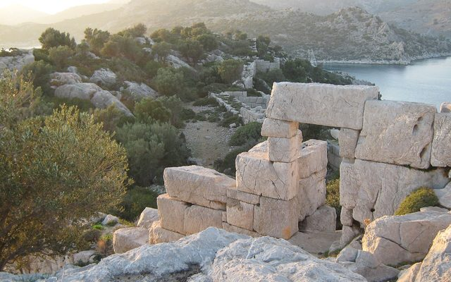

Ana sayfa › İl il gezilecek yerler › Muğla
Muğla'da Kültür Varlıkları rehberinde 48 yer var: 32 ören yeri, 9 müze, 2 göl, 2 yürüyüş rotası, 1 rafting, 1 kale & tarihi yapı, 1 kanyon. Aşağıda öne çıkanları, haritayı ve tüm yerlerin listesini bulabilirsiniz.
⭐ Öne çıkanlar

1 · Muğla · Ören YeriMuğla Knidos Örenyeri
Knidos, Datça Yarımadası'nın en ucunda, Ege ile Akdeniz'in buluştuğu noktada kurulmuş antik bir Dor kentidir.

2 · Muğla · Ören YeriAmintas Kaya Mezarı
Amintas Kaya Mezarı, Fethiye şehir merkezinin hemen üzerindeki kayalıklara oyulmuş, Likya bölgesinin en etkileyici kaya mezarlarından biridir.

3 · Muğla · Ören YeriAmos Antik Kenti
Amos, Marmaris'in Turunç beldesi yakınında, Kumlubük koyuna bakan bir tepe üzerinde kurulmuş Helenistik bir Karya kentidir.
🗺 Haritada
📍 Tüm yerler (48)
Ören Yeri (32)
Muğla Knidos ÖrenyeriÖren YeriAmintas Kaya MezarıÖren YeriAmos Antik KentiÖren Yeri Arsada Antik KentiÖren Yeri
Arsada Antik KentiÖren Yeri Bargylia Antik KentiÖren Yeri
Bargylia Antik KentiÖren Yeri Bodrum Antik TiyatrosuÖren Yeri
Bodrum Antik TiyatrosuÖren Yeri Fethiye Gemile AdasıÖren Yeri
Fethiye Gemile AdasıÖren Yeri Fethiye Kayaköy ÖrenyeriÖren Yeri
Fethiye Kayaköy ÖrenyeriÖren Yeri Fethiye Letoon ÖrenyeriÖren Yeri
Fethiye Letoon ÖrenyeriÖren Yeri Fethiye Pınara ÖrenyeriÖren Yeri
Fethiye Pınara ÖrenyeriÖren Yeri Fethiye Tlos ÖrenyeriÖren Yeri
Fethiye Tlos ÖrenyeriÖren Yeri Gümüşkesen Anıt MezarıÖren Yeri
Gümüşkesen Anıt MezarıÖren Yeri Herakleia (Latmos) Antik KentiÖren Yeri
Herakleia (Latmos) Antik KentiÖren Yeri Iassos ÖrenyeriÖren Yeri
Iassos ÖrenyeriÖren Yeri Kadyanda Antik KentiÖren Yeri
Kadyanda Antik KentiÖren Yeri Kaunos ÖrenyeriÖren Yeri
Kaunos ÖrenyeriÖren Yeri Keramos Antik KentiÖren Yeri
Keramos Antik KentiÖren Yeri Labraunda ÖrenyeriÖren Yeri
Labraunda ÖrenyeriÖren Yeri Lagina ÖrenyeriÖren Yeri
Lagina ÖrenyeriÖren Yeri
Loryma Antik KentiÖren Yeri Milas Beçin Kalesi ve ÖrenyeriÖren Yeri
Milas Beçin Kalesi ve ÖrenyeriÖren Yeri Milas Euromos ÖrenyeriÖren Yeri
Milas Euromos ÖrenyeriÖren Yeri Milas Uzunyuva Anıt Mezarı ve Müze KompleksiÖren Yeri
Milas Uzunyuva Anıt Mezarı ve Müze KompleksiÖren Yeri Myndos Antik KentiÖren Yeri
Myndos Antik KentiÖren Yeri Pedasa Antik KentiÖren Yeri
Pedasa Antik KentiÖren Yeri Pydnai KalesiÖren Yeri
Pydnai KalesiÖren Yeri Sedir Adası ÖrenyeriÖren Yeri
Sedir Adası ÖrenyeriÖren Yeri Sidyma Antik KentiÖren Yeri
Sidyma Antik KentiÖren Yeri Stratonikeia ÖrenyeriÖren YeriHyllarima Antik KentiÖren YeriMilas Uzunyuva (Hekatomnos Anıt Mezarı)Ören YeriOinoanda Antik KentiÖren Yeri
Stratonikeia ÖrenyeriÖren YeriHyllarima Antik KentiÖren YeriMilas Uzunyuva (Hekatomnos Anıt Mezarı)Ören YeriOinoanda Antik KentiÖren YeriMüze (9)
 Bodrum Sualtı Arkeoloji MüzesiMüze
Bodrum Sualtı Arkeoloji MüzesiMüze Fethiye MüzesiMüze
Fethiye MüzesiMüze Milas İassos Balık Pazarı MüzesiMüze
Milas İassos Balık Pazarı MüzesiMüze Muğla Bodrum Mausoleium Anıt MüzesiMüze
Muğla Bodrum Mausoleium Anıt MüzesiMüze Muğla MüzesiMüze
Muğla MüzesiMüze Zeki Müren Sanat MüzesiMüzeBodrum Serçe Limanı Cam Batığı Sergi SalonuMüzeMarmaris MüzesiMüzeMilas Taş Eserler MüzesiMüze
Zeki Müren Sanat MüzesiMüzeBodrum Serçe Limanı Cam Batığı Sergi SalonuMüzeMarmaris MüzesiMüzeMilas Taş Eserler MüzesiMüzeGöl (2)


Yürüyüş Rotası (2)


Rafting (1)

Kale & Tarihi Yapı (1)

Kanyon (1)

⏳ Zamanda yolculuk
🧭 Bu ili içeren rotalar
🏺 İlgili uygarlık rehberleri
👩🏫 Öğretmenler için
📄 Knidos – Zamanda yolculuk📄 Benim ilim: Muğla🚌 Bu ile okul gezisi planlaEtkinlik kâğıtları ▸